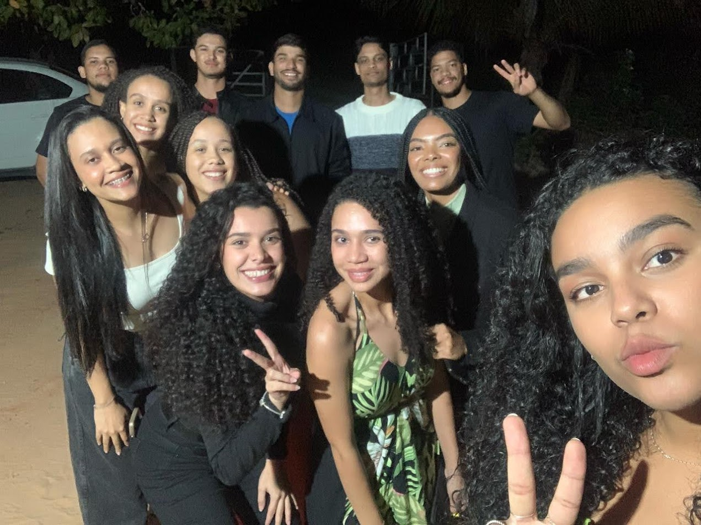
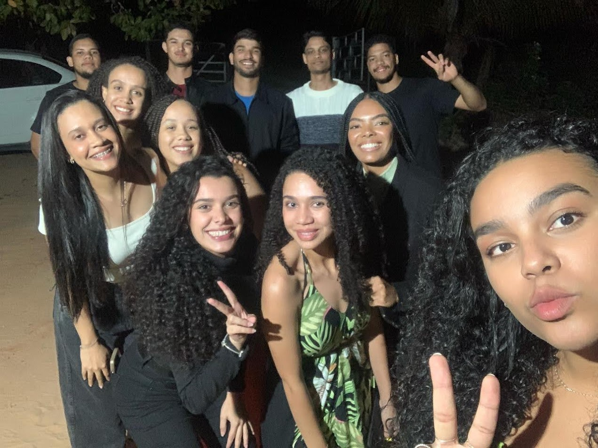
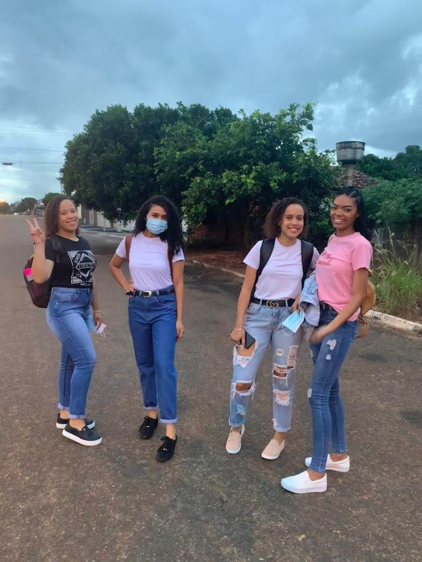
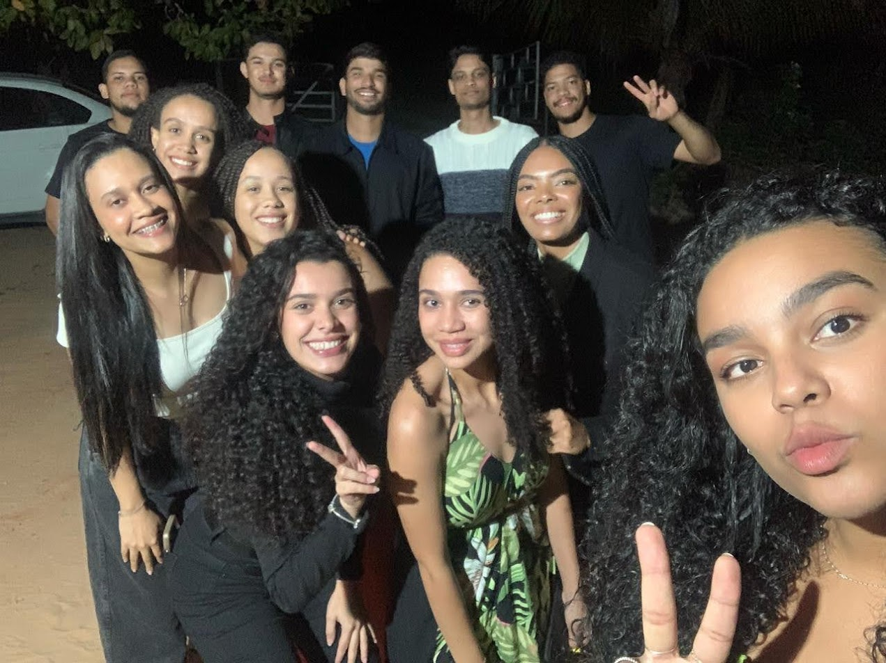
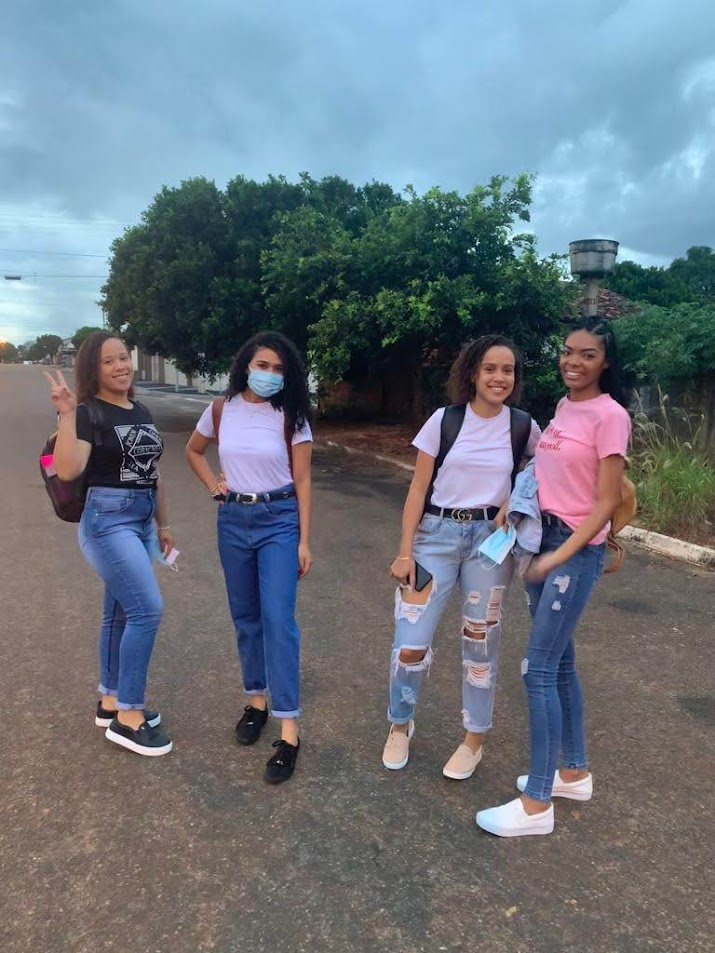
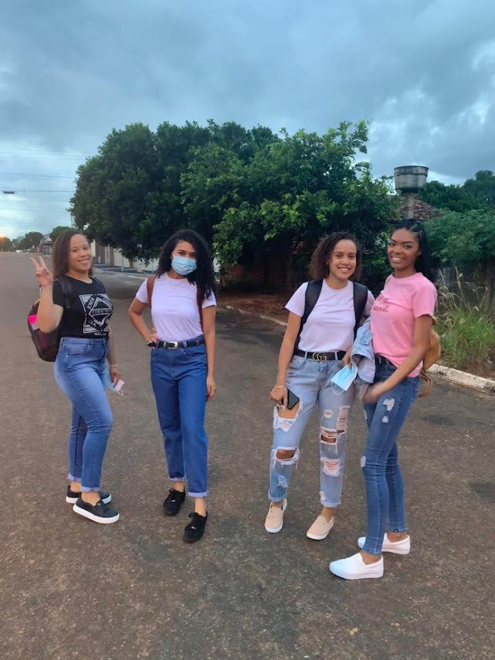
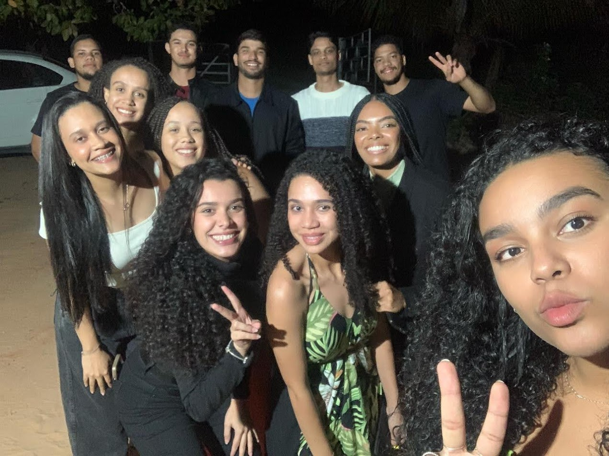
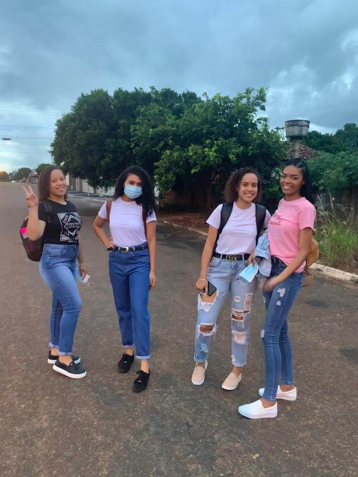

 





Aos meus amigos da faculdade, vocês não apenas me acompanharam nas aulas e nas provas, mas foram a razão de eu
enfrentar os desafios com um sorriso no rosto. Cada dia vivido ao lado de vocês foi uma mistura de aprendizado,
risadas e muito companheirismo. Não importa o quão difícil fosse a matéria ou o quanto as noites de estudos se
alongassem, sempre havia tempo para uma piada, uma conversa descontraída ou até mesmo um desabafo que aliviava a
carga de pressão. Esses momentos, que surgiam entre os trabalhos em grupo, as discussões sobre projetos e os
cafés compartilhados, formaram uma rede de apoio que fez toda a diferença na minha jornada. Eu nunca teria
conseguido atravessar essa fase da minha vida sem vocês ao meu lado. Obrigada por me fazerem sentir que, mesmo
nas dificuldades, sempre havia um sorriso para me dar forças para seguir em frente. São memórias que eu vou
levar comigo para o resto da minha vida, e eu sou eternamente grata por cada uma delas.
Aos meus amigos de infância, vocês foram os primeiros a me ensinar o que é amizade de verdade. Com vocês,
aprendi a importância da lealdade, da confiança e do carinho genuíno. Crescemos juntos, passamos por tantas
coisas, e mesmo com o tempo e a distância, nossa amizade sempre foi uma constante. Foram tantas tardes de
brincadeiras, conversas até tarde da noite, confidências e momentos de pura diversão. O que eu vivi ao lado de
cada um de vocês foi fundamental para me tornar quem sou hoje. Mesmo quando os caminhos da vida nos afastaram
fisicamente, a conexão que criamos jamais se quebrou. Eu sempre pude contar com vocês, e esse apoio imensurável
é um dos maiores presentes que a vida me deu. Eu sei que, independentemente da distância, nosso vínculo sempre
permanecerá forte. E, por tudo o que vivemos, meu coração sempre será grato a cada um de vocês.
Este site, embora simples, é uma maneira de tentar expressar um pouco da gratidão que sinto. Ele é uma forma de
registrar e eternizar todas as boas memórias que construímos juntos, todos os momentos especiais que formaram a
base do que sou hoje. **Vocês são extremamente importantes para mim**, e tudo o que vivemos juntos estará sempre
guardado com muito carinho. Agora, com este pequeno gesto, quero deixar claro o quanto cada um de vocês fez (e
continua fazendo) a diferença na minha vida. Não importa onde a vida nos leve, o que importa é que sempre
teremos essas lembranças preciosas para nos lembrar de nossa amizade e do impacto que causamos uns nos
outros.
Por isso, com muito amor e gratidão, deixo aqui meus mais sinceros agradecimentos a cada um de vocês. E, claro,
o meu carinho imenso fica registrado para sempre em meu coração. Que possamos continuar a compartilhar nossa
jornada, nossas vitórias e, até mesmo, nossas dificuldades, sempre com a certeza de que temos uns aos outros, em
qualquer momento da vida.
Com todo meu carinho,
Raquel